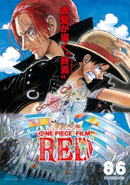
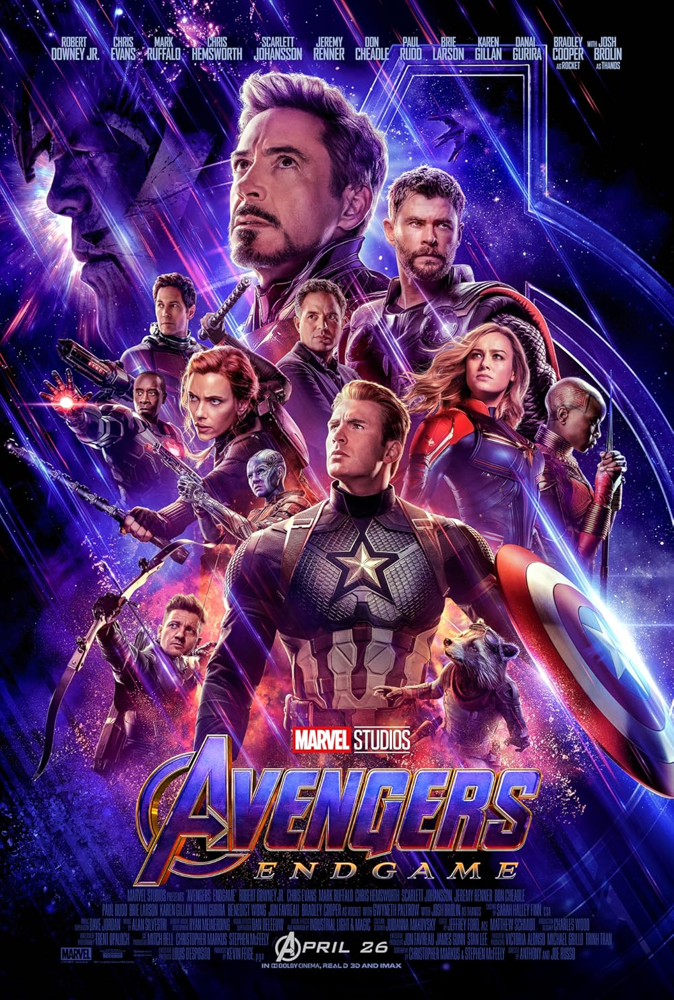
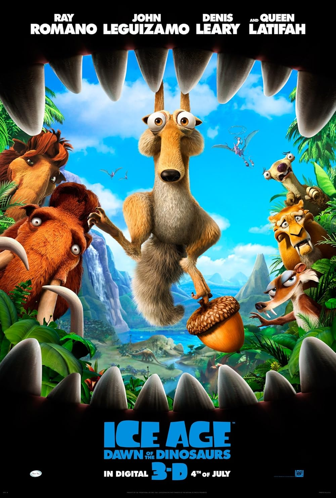
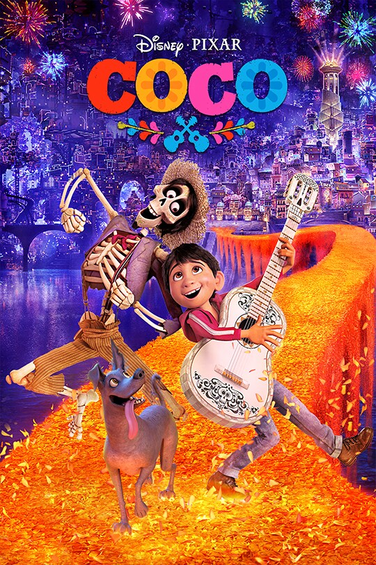

My Top 10 Favorite Movies
Top 1
Harry Potter and the Goblet of Fire

In Harry Potter and the Goblet of Fire, Harry competes in the perilous Triwizard Tournament, only to uncover a deadly plot that leads to Lord Voldemort’s return.
Top 2
One Piece Red
In One Piece Film: Red, Luffy and the Straw Hat Pirates attend a concert by Uta, Shanks’ daughter, only to uncover her plan to trap the world in a dream, leading to a battle that reveals her tragic past.
Top 3
The Greatest Showman

The Greatest Showman follows P.T. Barnum's rise from poverty to fame as he creates a dazzling circus, overcoming struggles and celebrating dreams and diversity.
Top 4
Transformers the Last Knight

Transformers: The Last Knight follows Cade Yeager, Bumblebee, and an unlikely team as they uncover the hidden history of Transformers on Earth and race to stop a looming apocalypse, while Optimus Prime struggles with his corrupted allegiance.
Top 5
Avengers Infinity War

Avengers: Infinity War follows the Avengers and their allies as they battle to stop Thanos from collecting the Infinity Stones and wiping out half of all life, leading to a devastating defeat.
Top 6
Avengers Endgame
Avengers: Endgame sees the surviving heroes embark on a time-travel mission to retrieve the Infinity Stones, undo Thanos’ snap, and face him in an epic final battle to restore the universe.
Top 7
Pirates of the Caribbean: Dead Men Tell No Tales

Pirates of the Caribbean: Dead Men Tell No Tales follows Captain Jack Sparrow as he teams up with Henry Turner and Carina Smyth to find the legendary Trident of Poseidon while being hunted by the vengeful ghost Captain Salazar.
Top 8
Deadpool and Wolverine

Deadpool & Wolverine follows Deadpool as he joins the TVA to save the multiverse, teaming up with a reluctant Wolverine for a chaotic mission.
Top 9
Ice Age: Dawn of the Dinosaurs
Ice Age: Dawn of the Dinosaurs follows Manny, Sid, Diego, and the gang as they venture into a hidden prehistoric world to rescue Sid, who has been taken by a mother T-Rex after stealing her eggs.
Top 10
Coco
Coco follows Miguel, a boy who dreams of music, as he enters the Land of the Dead and uncovers his family's history and true legacy.